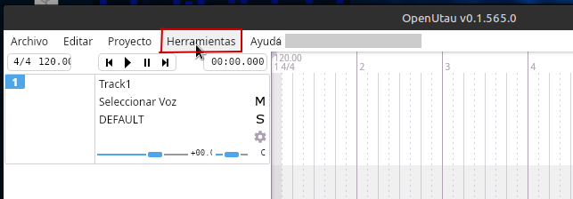
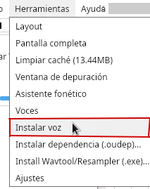
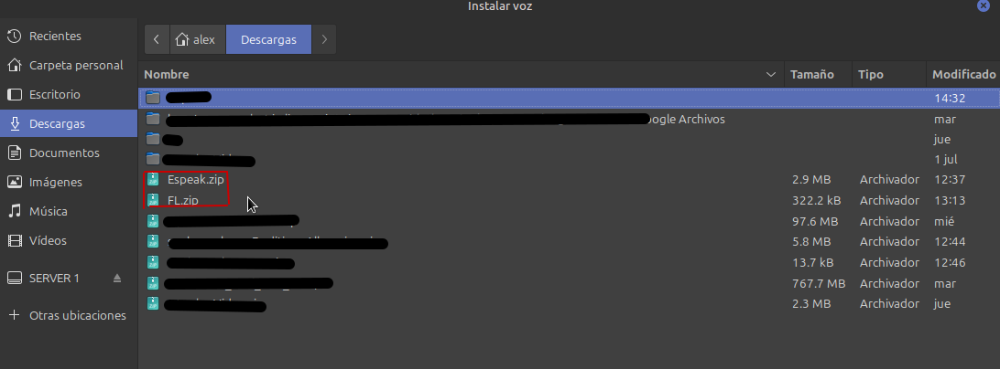
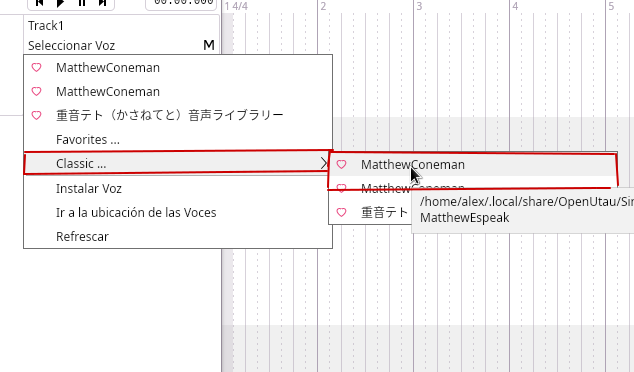
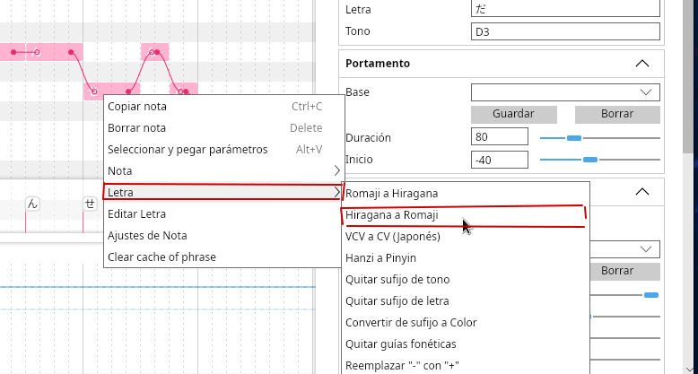

en esta pagina estan los links de descarga para los voicebanks de mattew coneman y como instalarlos en OPENUTAU
Paso 1: Descargar algun voicebank de la pagina (se encuentran abajo de este tutorial) y entrar a open utau y darle a la opcion en la esquina izquierda de la pantalla "Herramientas"

Paso 2: hacer click en el boton de instalar voz

Paso 3: seleccionar el voicebank de mattew coneman que prefieras (disponibles fl y espeak)

Paso 4: hacer click en "Seleccionar Voz" en el track donde quieras usar el utau, luego selecciona "MattewConeman"

ADVERTENCIA!!! mattew coneman solo funciona en el alfabeto latino, implicando que tengas que cambiar de cual sea el alfabeto que estes usando para las letras a latino

favor de utilizar un fonetizador en ingles o español, funciona mejor en español desde el utau esta construido bajo ese idioma
DESCARGAS
FL Voicebank, hecho para cantar, pero el mas roto ESPEAK Voicebank, el menos roto, pero no hecho especificamente para cantar.